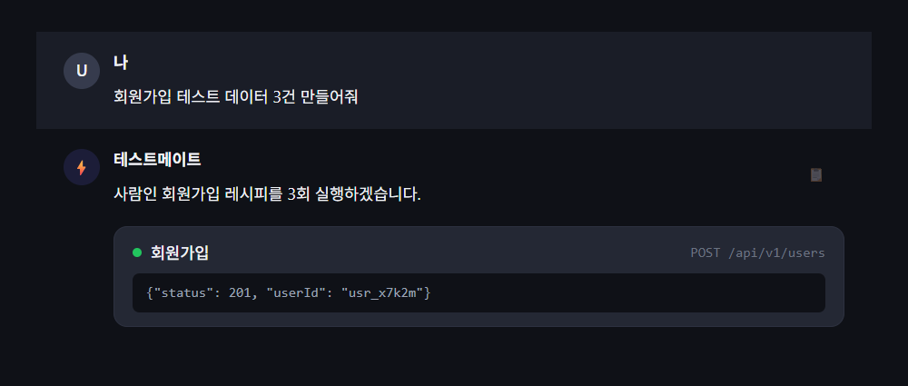
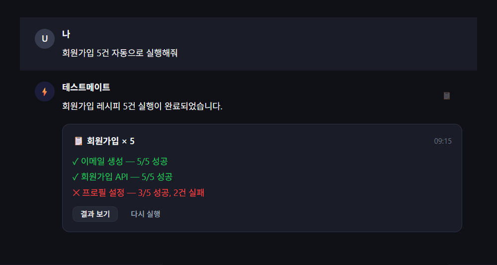

한눈에 보기
테스트메이트는 채팅으로 원하는 상황을 말하면 AI가 필요한 API를 골라 실제로 실행해 테스트 데이터를 만들어 주는 도구입니다. QA가 테스트할 때 필요한 상황별 데이터(가입 직후 회원, 결제 완료 회원, 공고가 올라간 상태 등)를, 기능이나 정책을 몰라도 대화 한 번으로 준비할 수 있습니다.
어떤 문제를 푸는가
QA는 테스트마다 상황에 맞는 데이터를 직접 만들어야 합니다. 그러려면 어떤 API를 어떤 순서로 호출해야 하는지, 관련 정책이 무엇인지 알아야 합니다. 상황의 경우의 수가 많아 미리 다 만들어 둘 수 없고, 매번 반복되는 번거로운 일입니다.
또한 개발 단계에서 화면이 아직 없을 때는, 지금은 Swagger로 직접 API를 호출하거나 해당 파트를 만든 개발자에게 요청해야 합니다. 이런 준비 과정에 적지 않은 시간이 듭니다.
어떻게 푸는가
사용자는 방법을 몰라도 됩니다. 원하는 상황만 말하면, AI가 등록된 작업(레시피)들 중 필요한 것을 골라 순서대로 실행합니다. 처음 보는 요청이라도 그 자리에서 필요한 API를 조합합니다.

핵심 용어
테스트메이트를 이해하는 데 필요한 개념은 많지 않습니다. 아래 여섯 가지면 충분합니다.
| 용어 | 뜻 | ||||||||||
|---|---|---|---|---|---|---|---|---|---|---|---|
| 레시피 | 작업의 실행 순서를 정의한 워크플로우. 순서대로 실행되는 여러 “스텝”의 묶음입니다. 한 번 만들어 저장하고 계속 재사용합니다. (예: “회원가입” 레시피) | ||||||||||
| 스텝 |
레시피를 구성하는 개별 실행 단위. 네 가지 종류가 있습니다.
| ||||||||||
| 플랜 | AI가 여러 레시피를 조합해 만든 1회성 실행 계획. 저장하지 않습니다. 하나의 요청에 여러 작업이 필요할 때 AI가 그때그때 구성합니다. | ||||||||||
| 스펙 | 외부 서버가 제공하는 API 목록의 원천(OpenAPI 스펙). 레시피가 호출할 수 있는 API가 여기서 나옵니다. | ||||||||||
| 라이브러리 | 각 서버에 붙이는 작은 연동 모듈. 그 서버의 API 목록을 자동으로 수집해 테스트메이트에 등록합니다. | ||||||||||
| 정보 조회 | 정책·기능 질문에 답하기 위해 AI가 API 설명과 Jira 문서를 스스로 찾아보는 과정. |
동작 원리
크게 준비 단계와 사용 단계로 나뉩니다.
준비 — 서버를 연결한다 (개발자가 1회 설정)
새 서버가 늘어도 똑같이 라이브러리만 붙이면 됩니다. 이 점이 뒤에 나오는 “여러 서버 통합” 비전의 기반이 됩니다.
사용 — 대화로 실행한다
왜 굳이 AI인가
테스트 데이터 준비를 미리 짠 스크립트로 자동화할 수도 있습니다. 하지만 스크립트는 정해진 경우만 처리합니다. 상황이 조금만 달라지면 사람이 다시 짜야 합니다. QA 데이터는 상황의 경우의 수가 많아 이를 전부 미리 만들어 둘 수 없습니다.
테스트메이트의 핵심은 매번 다른 요청을 그때그때 이해하고, 필요한 API를 즉석에서 조합하는 데 있습니다. 이 “이해하고 조합하는” 판단은 규칙 기반 자동화로는 불가능하고, AI만 할 수 있습니다. AI가 장식이 아니라 핵심 동력인 이유입니다.
신뢰성과 안전장치
- 지어내지 않습니다. 실제로 등록된 API 목록과 Jira 문서를 근거로만 답하고 실행합니다. 근거가 없으면 되묻거나 “없다”고 답합니다.
- 위험한 작업은 확인을 받습니다. 결제처럼 되돌릴 수 없는 API는 라이브러리 표시(
@TestForgeConfirm)로 실행 전에 사용자 확인을 거칩니다. 내부·관리용 API는 아예 노출되지 않게(@TestForgeExclude) 막을 수 있습니다. - 운영 환경에 영향을 주지 않습니다. API 목록은 개발·스테이징 환경에서만 전송하도록 설정하며, 라이브러리를 설정 파일로 켜야만 동작합니다.
예시 시나리오
AI가 두 서버를 넘나들며 순서대로 실행합니다.
- [사용자용 서버] 회원가입 또는 기존 계정 로그인
- [사용자용 서버] 메일 인증번호를 스크립트로 읽어 인증 처리
- [사용자용 서버] 운영 중인 공고 중 하나 탐색
- [사용자용 서버] 해당 공고에 입사지원
- [기업용 서버] 방금 생성된 지원 건을 서류 합격 상태로 변경

비전 — QA 데이터 생성은 시작점
- 이슈 / VOC 재현 — 티켓이 올라오면 그 티켓을 재현할 데이터를 자동으로 만들어 둡니다. 개발자는 재현된 상태에서 바로 확인합니다.
- 미니앱형 통합 플랫폼 — 입력 폼을 갖추면 여러 서버를 한곳에서 다루는 통합 플랫폼으로 확장됩니다.
- 대화형 어드민 — 관리자가 화면을 찾아다니지 않고 말로 조회·처리합니다.
- 확장 기능 — 데이터 되돌리기, 같은 상황 대량 생성, 레시피 공유 등.
같은 구조를 사내 여러 서버의 반복 업무로 넓혀갈 수 있습니다.